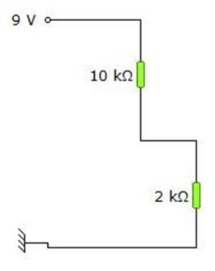
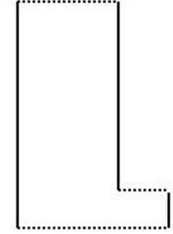
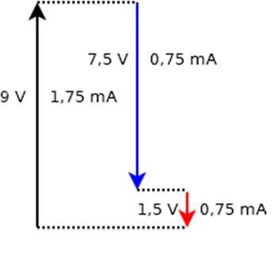
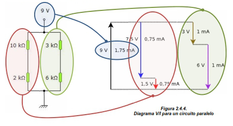

2.4. Diagrama tensión-intensidad de un circuito electrónico
|
 |
|
|
|
Figura 2.4.1. |
En los últimos cursos hemos puesto en juego un sistema de representación de los circuitos que os ayudaba bastante a visualizar qué sucedía con ciertas magnitudes, como el voltaje o la intensidad. Aunque requiere acostumbrarse a cierta visualización, favorece la comprensión de los circuitos. Vamos a verlo.
Imagina que coges el circuito de la página anterior (en su representación en esquema abierto), y lo dibujas de la forma que ves en la figura 2.4.1., como si fuera una “escalera”. Las resistencias representarán los “peldaños” de esa escalera y la distancia entre el positivo y el negativo del circuito, la “altura” total que salva nuestra “escalera”.
|
 |
|
Figura 2.4.2. |
Pues bien, pensemos que cada escalón no corresponde a una altura física, sino a una diferencia de potencial (o tensión, o voltaje, ya sabes), justo la que existe en los extremos de cada componente. Como ya sabes de cursos anteriores, esa diferencia de potencial será mayor en la resistencia de mayor valor, por lo que el primer peldaño, ciertamente, tendrá que ser mayor que el segundo (de hecho, si te paras a pensar, como la resistencia superior es cinco veces la inferior, el peldaño tendrá que ser, por tanto, cinco veces más grande). Si tenemos en cuenta esto, podríamos dibujar nuestra escalera como en la figura 2.4.2., incluyendo ya esta diferencia (lógica) entre los escalones.
Bueno, pues una vez asumido esto, pongamos sobre cada línea una flecha, teniendo en cuenta los siguientes criterios:
a) La flecha será ascendente si estamos representando una subida de potencial (fuente de alimentación, pila, etc.).
b) La flecha será descendente si estamos representando una caída de potencial (que sucede en un receptor)
c) A la izquierda de cada flecha representamos el valor de la diferencia de potencial (en voltios, milivoltios, etc.)
d) A la derecha de cada flecha representamos la intensidad que atraviesa el elemento al que representa la flecha (independientemente de que sea un generador o un receptor).
e) Para un circuito en paralelo, tendremos tantas escaleras como ramas o caminos tenga el mismo.
|
 |
|
Figura 2.4.3. Diagrama V/I para un circuito serie |
Con esto, nuestro circuito quedará representado por el diagrama V/I que aparece en la figura 2.4.3.
Por último, te dejo aquí unas indicaciones que te ayudarán a construir el diagrama V/I de cualquier circuito:
- La suma total de los peldaños de cada escalera tiene que ser igual a la del lado izquierdo de la escalera.
- La intensidad de corriente por un camino es la misma para cada componente.
- La suma de las intensidades por los diferentes caminos de un circuito en paralelo tiene que darnos igual a la de la pila.
Te dejo también un ejemplo de diagrama V/I para un circuito en paralelo, construido a partir de nuestro ejemplo anterior (figura 2.4.4.).
|
 |
|
Figura 2.4.4. Diagrama V/I para un circuito paralelo |
Obra publicada con Licencia Creative Commons Reconocimiento No comercial Compartir igual 4.0